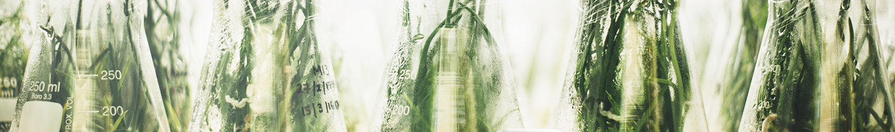

攝護腺癌在惡化過程中，常會對荷爾蒙療法產生抗性且隨著癌轉移，中央研究院農業生物科技研究中心蕭培文研究員的研究團隊的最新研究發現，具荷爾蒙抗性及轉移性攝護腺癌細胞高度表現galectin-4蛋白，惡化過程中，並伴隨細胞表面蛋白質的醣化修飾會轉變成帶唾液酸化的O型短鏈醣為主。 Galectin-4 透過與細胞表面多種酪胺酸激酶受體(RTKs)上O型醣鏈的結合，活化MYC 驅動特定的O型醣基化酵素表現，主導醣鏈生合成路徑轉向，產生更多galectin-4 能結合的O 型醣鏈，如此形成正向回饋
恭賀本中心特聘研究員邱子珍博士榮獲「第62屆教育部學術獎」。教育部為獎勵學術研究，並提高教學與研究水準，特設置學術獎。學術獎頒贈對象為於國內積極從事學術研究，有重要貢獻或傑出成就並獲得學術界肯定者。學術獎為至高學術榮譽，本中心邱子珍特聘研究員歷經嚴謹之遴選過程，於眾多優秀學者中脫穎而出，獲得此殊榮。今年度頒獎典禮預訂於12月舉行，總統蔡英文將親自擔任頒獎人，學術獎得獎人則將獲頒榮譽證書及獎金。
Through this conference, we hope to bring together scientists working on emerging and innovative science and technology in plant stress biology and phytomedicine for human, livestock and/or poultry healthcare, and to promote agriculture-related research and biotechnology in Taiwan. We hope to facilitate closer communication between academic and industrial researchers and young scholars for promoting research
The "ABRC 19th Annual Poster Competition 2018" will be held from 1:30 PM to 6:00 PM on October 16 (Tuesday), 2018, at the Poster Session Area, 4F, Humanities and Social Sciences Building, Academia Sinica (中央研究院人文社會科學館4樓壁報展覽區)
恭賀本中心特聘研究員徐麗芬博士榮獲「第14屆永信李天德醫藥科技獎-卓越醫藥科技獎」。財團法人永信李天德醫藥基金會為鼓勵國人從事醫、藥科技研發工作，選拔傑出貢獻者，頒予卓越醫藥科技獎、青年醫藥科技獎及傑出論文獎以茲獎勵。永信李天德醫藥科技獎至今已舉辦14屆，本中心特聘研究員徐麗芬博士在植物藥學術研究方面之卓越成就與表現，自眾多申請人中脫穎而出，榮獲今(107)年度卓越醫藥科技獎。 「第 14 屆永信李天德醫藥科技獎」 得獎名單
攝護腺癌在惡化過程中，常會對荷爾蒙療法產生抗性且隨著癌轉移，中央研究院農業生物科技研究中心蕭培文研究員的研究團隊的最新研究發現，具荷爾蒙抗性及轉移性攝護腺癌細胞高度表現galectin-4蛋白，惡化過程中，並伴隨細胞表面蛋白質的醣化修飾會轉變成帶唾液酸化的O型短鏈醣為主。 Galectin-4 透過與細胞表面多種酪胺酸激酶受體(RTKs)上O型醣鏈的結合，活化MYC 驅動特定的O型醣基化酵素表現，主導醣鏈生合成路徑轉向，產生更多galectin-4 能結合的O 型醣鏈，如此形成正向回饋 4 透過與細胞表面多種酪胺酸激酶受體(RTKs)上O型醣鏈4 透過與細胞表面多種酪胺酸激酶受體(RTKs)上O型醣鏈4 透過與細胞表面多種酪胺酸激酶受體(RTKs)上O型醣鏈4 透過與細胞表面多種酪胺酸激酶受體(RTKs)上O型醣鏈4 透過與細胞表面多種酪胺酸激酶受體(RTKs)上O型醣鏈